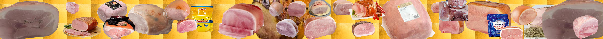

Brevet d'emballage pour blocs de jambon cuit // Étude Analytique de la Structure d’un Brevet
Contexte
En 1980, le 28 novembre, la société J.P. Rannou Salaisons de l'Odet, dépose en France un brevet d'invention (n° 80 25 377). Cette invention est celle d'un emballage pour jambon cuit. Le procès-verbal dont nous avons retrouvé la trace est daté du 6 janvier 1981, en Belgique, et ce brevet porte le numéro 886.971.
Les Salaisons de l'Odet sont, à l'origine, une entreprise familiale qui a vu le jour au début du vingtième siècle. Trois générations se sont succédées à la direction de cette entreprise qui, de modeste, est devenue, au fil du temps, une entreprise produisant, aujourd'hui, trente-trois mille tonnes de charcuterie par an. C'est au fil de transformations habiles et clairement décidées que cette entreprise, qui appartenait au grand père de J.P. Rannou, est devenue une entreprise fournissant de manière préférentielle toute une gamme de supermarché (qui ont d'ailleurs finit par en prendre la direction, les supermarché Mousquetaire de la chaîne Intermarché). L'entité est créée en 1905, par le grand père Rannou, rue de la Gare à Quimper. En 1960, la charcuterie devient unité de production après avoir déménagé rue Guy-Autret. C'est dix ans plus tard que l'unité de production s'accroit encore et doit déménager dans la Zone Industrielle, encore en gestation à l'époque, de Troyallac'h, à St-Evarzec. Les époux Rannou, Jean-Pierre et Monique, Jean-Pierre étant le petit fils en ligne direct du fondateur, sont les premiers à s'installer dans la ZI. Les Salaisons de Odet, deviennent au cours des années 80, l'entreprise Monique Ranou. La perte du N dans le nom s’explique par une simplicité commerciale et une volonté d’efficacité publicitaire. Des agrandissements successifs, preuves d’une ambition prise dans ses propres tourbillons, mènent presque la société à la faillite. C’est à ce moment que l'entreprise est rachetée par le groupe Intermarché Les Mousquetaires et connait, depuis lors, sous le nom de SCO-Monique Ranou (Société Charcutière de l'Odet), un succès notable. Son site de production fait 26 000m2, elle repose sur un terrain de 9 ha, fournit 140 000 millions de sachet consommateur et emploie 570 salariés.
Une invention se déploie à partir, puis autour, d'une problématique. Elle succède à une question existentielle et apporte une réponse matérielle et mécanique à une problématique de l'existence. Elle répond à une problématique qui touche l'existence dans ce qu'elle a de pratique. Ainsi de la machine du mouvement perpétuel qui répond au besoin de l'idée en tant qu'idée qui brûle au quotidien. Par la forme selon laquelle il se présente, un brevet d'invention synthétise une petite histoire. Il décrit les propriétés de l'invention pour présenter au monde son apport, il prend position. Il est possible d'avoir une représentation humaniste du brevet. C'est un don fait à certains gestes quotidiens, son but est de rationaliser les besoins les plus courants afin de les soulager de l'effort, c’est une grâce offerte en conjuration aux manquements du passé.
Sujet
"L'invention concerne un emballage pour jambon cuit"
Le jambon cuit en question pèse environ 5 kg. L'invention concerne le commerce de gros ou de mi-gros. Il est pourtant possible que certains particuliers peuvent aller acheter jusqu'à 5 kg de jambon cuit d'un seul coup, chez Métro peut-être avec la carte de commerçant d'un parent ou d'un voisin ou chez des charcutiers de qualité, à l'occasion d'un mariage ou d'une fête quelconque. A ce propos rappelons tout de même qu’Églantine a lu dans un livre de cuisine d’Alexandre Dumas que la fête du jambon tombe lors de la semaine sainte. Le jambon a toujours eu ce goût supplétif de la fête. Cette invention d’emballage, malgré ces quelques points qui sembleront transversaux, apporte plus à l'industrie et au commerce qu'à la pratique du consommateur moyen de jambon cuit.
Un jambon cuit est cuit dans une sorte de chaussette. Compressé durant la cuisson par un morceau de toile qui l'enserre, il garde une forme ronde et galbée au-dessus d'une de ses faces qui reste par contre plate, quant à elle, d'avoir supportée le poids du morceau de viande durant la cuisson. La vente à la sortie de l'industrie de salaison se fait sur la base de ces blocs entiers. Il importe par-dessus tout que l'acheteur puisse évaluer le produit. Ses marbrures, sa couleur, son aspect général. Il faut qu’il puisse être rassuré, ne pas ressentir d’inquiétude au sujet de la qualité du produit.

Description de l’objet
Ce brevet ressemble à la description technique de machines telle qu’elles pouvaient être décrites lors de la Renaissance. On distingue les éléments de manière précise, on donne la fonction et toutes les qualités de la chose inventée, on la décrit par ses moyens propres tout en respectant sa finalité.
Un inventeur est quelqu'un qui décrit par le menu une machine et, tout en s'appropriant la chose inventée lorsqu'il en signe l'invention, la rend disponible à une reproduction collective. On connait les descriptions de Pascal, de Torricelli, de Léonard de Vinci, de Diderot et de Goethe. Il s'agit à chaque fois de présenter au monde la fabrication d'une chose d'un point de vue pratique. Les articulations des pièces mécaniques sont identifiées par de petites lettres et par de petits chiffres, et tous ces indices indexent la chose inventée par ses éléments. La machine devient reproductible par sa description détaillée. Ces plans sont positivement des schémas, c'est-à-dire qu'ils sont un peu de l'ordre de la démonstration géométriques en même temps que de l'ordre de l'illustration technique, ils valent comme engagement pour la vérité de la machine dans l'existence, et au nom de son histoire. Ce sont des sortes de décalque. Avec son brevet et son schéma, l'inventeur se situe entre l'artisan et le commanditaire. Il est un intermédiaire comme le sont les anges. Le contenu d'un brevet est typiquement de cet ordre, c'est d'être intermédiaire.
Structure
Ce brevet pour une invention d'emballage de jambon cuit se découpe de la manière suivante :
La première page fonctionne comme une page de garde, elle annonce le brevet par un arrêté. Elle contient un numéro de brevet et des dates, elle nomme des représentants et des représentés, elle indique une autorité compétente dans tout son déploiement administratif (le royaume de Belgique, le ministère des affaires économiques, le service de la propriété industrielle, son directeur L. Salpeteur), une géographie est dessinée (Belgique, Bruxelles, France, Quimper, Route de Rosporden), cette page de garde "déclare". Elle le fait comme pourrait le faire une pancarte.
Vient ensuite la description de la problématique. Cette problématique se déploie selon plusieurs formats, autrement dit par un objet (le jambon cuit commercialisé entier emballé sous vide dans un plastique), des critères (la coloration des morceaux de viande ainsi que l'empilement et le stockage des jambons cuits, ce sont des problématiques de conservation) et des causes néfastes (les ultra-violet, l'espace de stockage). Ces différents aspects concourent à l'invention, l’invention apparait comme une solution à leur regroupement problématique. En vérité elle ne se situe nul par ailleurs qu'à leur croisement. Elle remédie aux inconvénients qu’ils ont de se rencontrer. Elle permet de réaliser quelque chose qui était jusqu'à présent inimaginable. Un brevet est un substrat du monde.
De façon générale, l'invention est la raison pratique du progrès et de l’évolution. En l'état, les emballages courants, qui précédaient l'emballage inventé, étaient de simple films plastique parfaitement adaptés à la forme du jambon cuit, sous vide ils offraient parfaitement toutes les caractéristiques du jambon cuit au consommateur qui les contemplait tout en gardant intact la fraicheur humide du jambon cuit. Ils avaient néanmoins les défauts, néfastes, pour la consommation et le commerce, de laisser passer les UV ainsi que d'empêcher d'empiler en grosse quantité ces sachets de jambon cuit, le haut de ces pains de jambon étant, nous l’avons dit, galbé. D'une part l'empilement de pareils jambons les déformait, empêchait d'utiliser des palettes du fait de leur déséquilibre et la transparence qui offrait au consommateur une vision du produit était aussi ce qui, par les UV, colorait la chair initialement rose du jambon cuit en gris et dégoutait ce même consommateur. Les produits devenaient rapidement invendables.
Ce brevet présente d'abord la solution retenue puis une représentation, au dessin crayonné, clôture le document. L’auteur nomme les deux figures de ce dessin : la vue en perspective de cet emballage et la vue en coupe, de détail donc, de cette même perspective. Comme dernier paragraphe, le brevet reprend alors tout ce qui l'a amené à exister, mais cette fois-ci, d'un point de vue légèrement moins historique et davantage technique. L'invention est maintenant au cœur du propos, il s'agit de "cet emballage". Il en est fait la description la plus complète qui soit. A chaque fois qu'un élément technique est apporté, il est renvoyé aux raisons initialement présentées comme fondamentales : opacité des parois aux UV et rigidité des parois latérales à la déformation. Au final nous avons la description détaillée, géométrique et technique d'une boite en carton avec un couvercle rabattable.
Mais avant ces dernières figures, schématiques, ce brevet comporte une page qui fonctionne un peu en miroir de la page de garde. Elle indique clairement les deux revendications, de manière ultime. Il faut citer intégralement la deuxième revendication qui est : "Emballage pour jambon cuit, tel que décrit ci-dessus et/ou conforme aux dessins annexés".
Conclusion
C’est bien la simplicité apparente du brevet qui est trompeuse. Ce brevet condense par exemple plusieurs non-dits. La standardisation des morceaux de jambon cuit en serait le premier et le plus évident. En effet on ne peut parler d'une boite en carton ajustée aux parois inférieurs et supérieurs du jambon cuit sans que ce jambon cuit ne soit lui-même, dans ses multiples versions, identique. Sinon un des jambon cuit pourrait ne pas être assez maintenu tandis qu'un autre contraindrait la boite. D’autre part, l'empilement de cet emballage est un ordre qui appartient à la chambre froide et au stockage de longue durée. Le film plastique est un outil pour la préservation de la fraicheur et de l'humidité intrinsèque du jambon cuit. C'est ainsi que croyant avoir à faire la présentation d'une vulgaire boite en carton opaque, le brevet présente un ensemble qui se situe dans un monde qui fonctionnerait à la manière d'un environnement pratico-technique, ce monde est le monde de l'industrie. Notre lecture l'indique maintenant clairement.